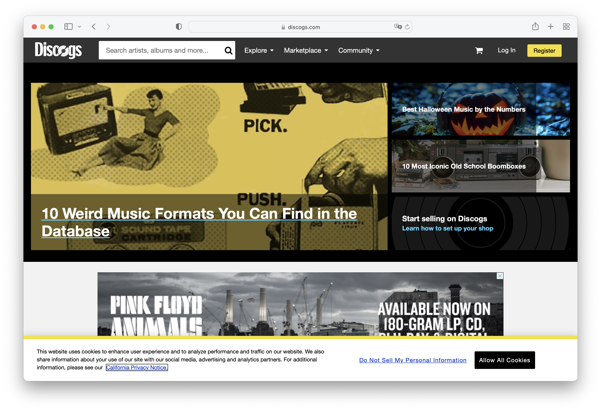
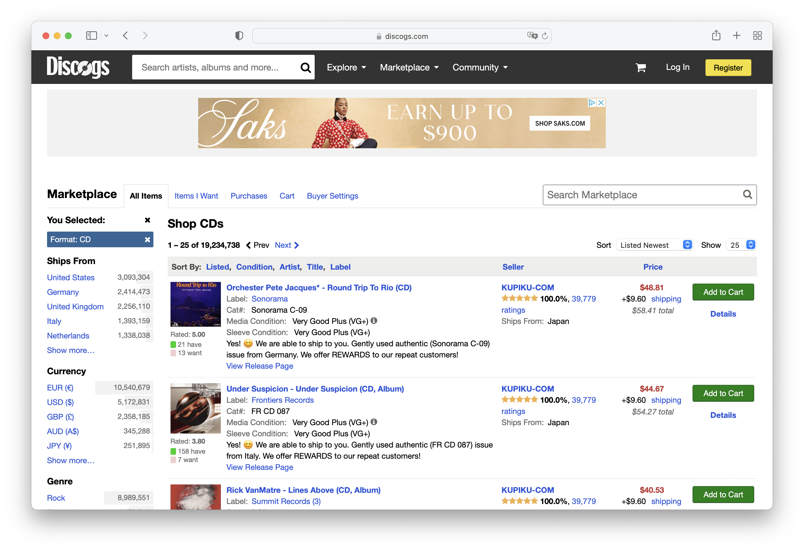
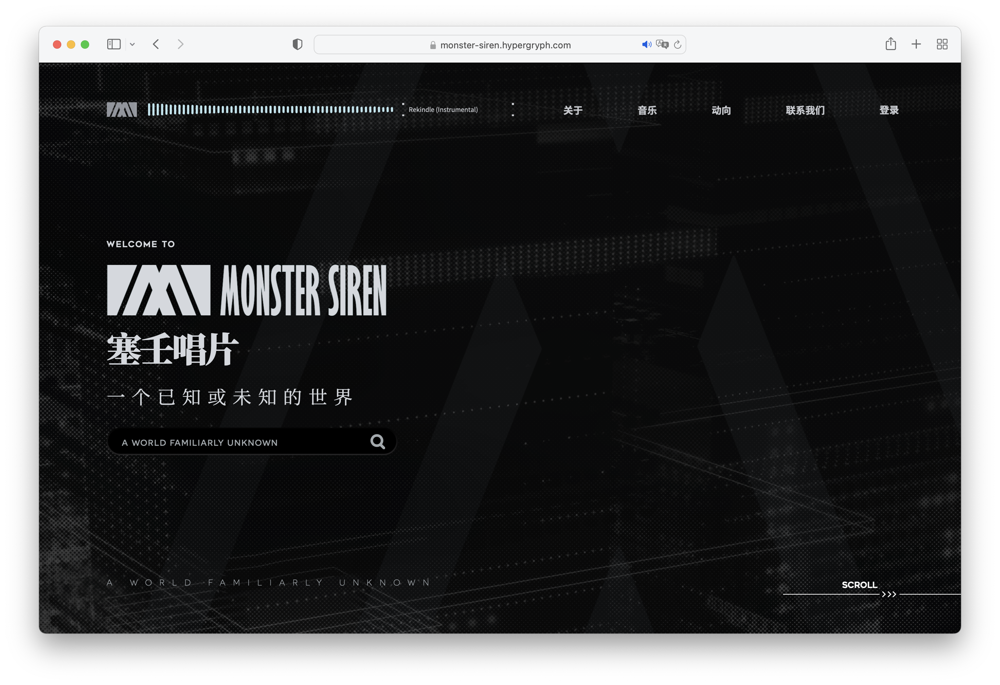
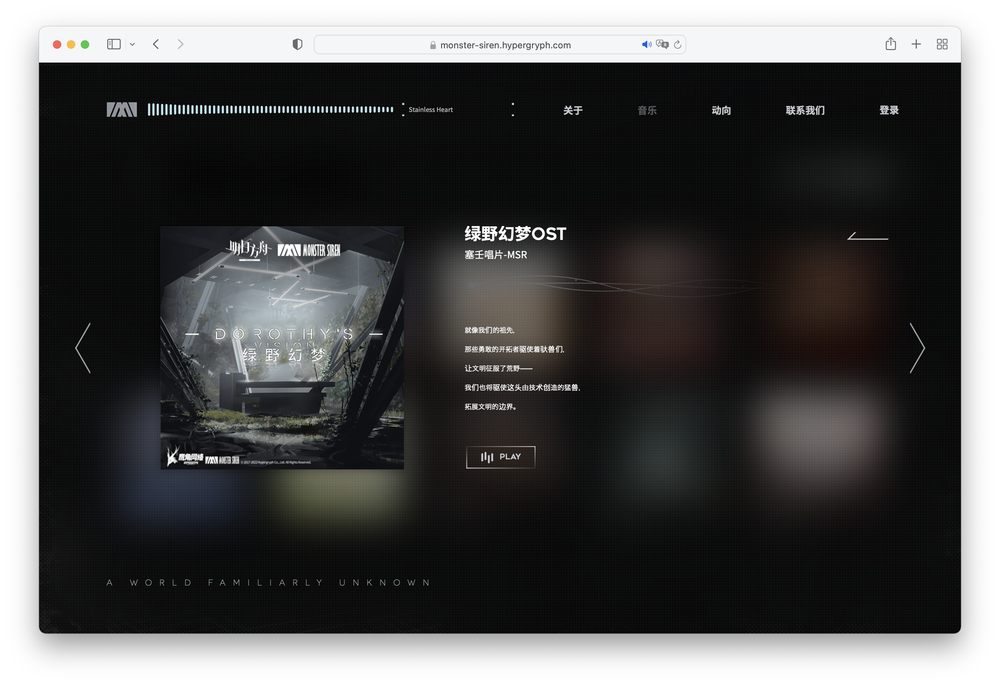
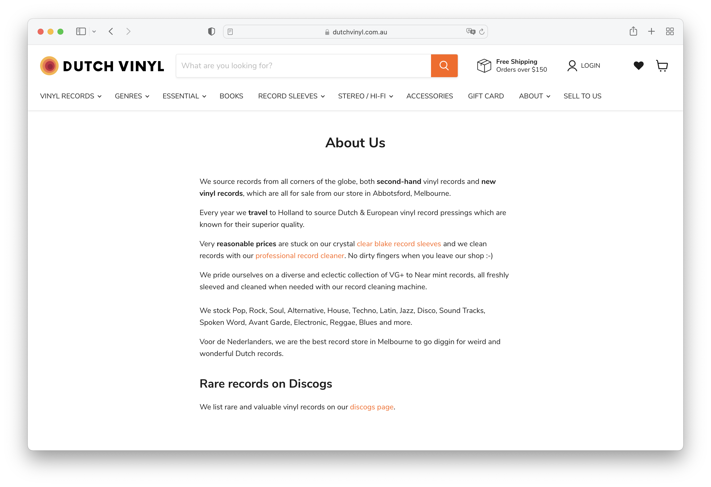
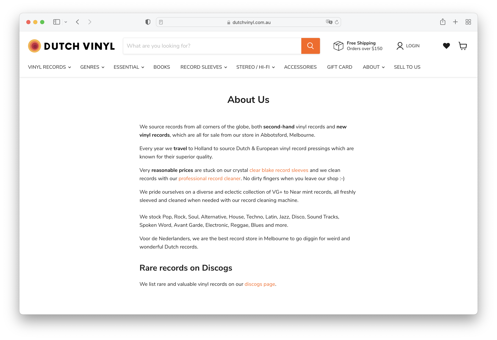

Final project proposal
Introduction
In-Tune Records
A small music shop that sells both physical media and digital music files. They have a curated music selection that is somewhat limited in genre.
Target audience
The primary audience is anyone who listens to music, likely fans of the few artists sold by the store. They may also be more specifically fans of physical music media.
Users may interact with the site to find specific or hard-to-find music. They are looking to make a purchase of the music they are looking for. New shoppers may want more information about music they are unfamiliar with.
Comparative analysis
Website 1 - Discogs
 Website 2
 Website 3
 

Website content
Home
Welcome to In-Tune Records!
[A photograph of a record player with a record on it.]
About
Our Story: In-Tune records was founded in 2022 to provide a home for the lesser known and hard-to-find music you love. We began with a passion for music which we hope to share with you. Our specialty lies in EDM such as UK Hardcore and Touhou Eurobeat. We began growing our collection, and now we're confident that we'll have something our customers are looking for.
[A photo of the founder standing in front of the storefront.]
Shop
Here you can browse our selection of physical and digital tracks.
[A photograph of shelves filled with CD cases.]
-
Crazy Love/Sounds Legit
$20.00
[An image of the album art for Crazy Love/Sounds Legit.]
Crazy Love and Sounds Legit by Brisk & Ham featuring MC Whizzkid
Format: Vinyl
-
Over & Over
$20.00
[An image of the album art for Over & Over.]
Over & Over by Hujib
Format: Vinyl
-
Crazy Love/Sounds Legit
$20.00
[An image of the album art for Crazy Love/Sounds Legit.]
Crazy Love and Sounds Legit by Brisk & Ham featuring MC Whizzkid
Format: Vinyl
-
You Better Run/You Better Run (Vagabond Mix)
$20.00
[An image of the album art for You Better Run/You Better Run (Vagabond Mix).]
You Better Run/You Better Run (Vagabond Mix) by Frisky and Hujib
Format: Vinyl
-
Definition of a Badboy/Hollow Soul
$20.00
[An image of the album art for Definition of a Badboy/Hollow Soul.]
Definition of a Badboy/Hollow Soul by Scott Brown
Format: Vinyl
-
Toho Eurobeat Vol. 4 (Perfect Cherry Blossom)
$30.00
[An image of the album art for Toho Eurobeat Vol. 4]
Toho Eurobeat Vol. 4 by A-One
Format: CD
-
Toho Eurobeat Vol. 10 (Highly Responsive to Prayers)
$30.00
[An image of the album art for Toho Eurobeat Vol. 10]
Toho Eurobeat Vol. 10 by A-One
Format: CD
-
Toho Eurobeat Vol. 6 (Phantasmagoria of Flower View)
$30.00
[An image of the album art for Toho Eurobeat Vol. 6]
Toho Eurobeat Vol. 6 by A-One
Format: CD
-
Toho Eurobeat Presents The Revival Mix
$30.00
[An image of the album art for Toho Eurobeat Presents The Revival Mix]
Toho Eurobeat Presents The Revival Mix by A-One
Format: CD
Location
You can find us here, at 717 Marsh St, San Luis Obispo
[A map with a marker at 717 Marsh St, San Luis Obispo]